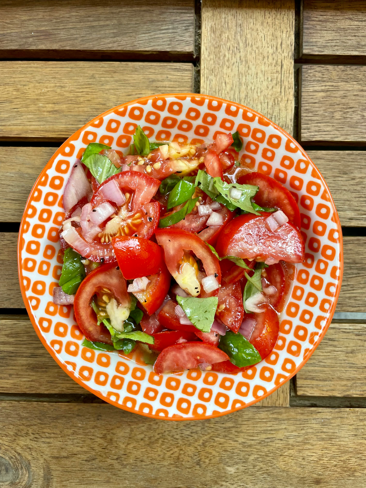

Home
Pizza

Description
This refreshing cucumber tomato salad made with sliced cucumber, juicy tomatoes, and onion tossed in a sweet and tangy vinaigrette is easy to prepare, has tons of flavor, and is perfect for a warm summer day.
Ingredients
- 1 cup water
- 1 cup distilled white vinegar
- 1/4 cup vegetable oil
- 1/4 cup sugar
- 1 teaspoon salt, or to taste
- 1 teaspoon freshly ground black pepper, or to taste
- 3 cucumbers, peeled and sliced ¼-inch thick
- 3 tomatoes, cut into wedges
- 1 onion, sliced and separated into rings
Steps
- Gather all ingredients.
- Whisk water, vinegar, oil, sugar, salt, and pepper together in a large bowl until smooth.
- Add cucumbers, tomatoes, and onion and stir to coat.
- Cover bowl with plastic wrap; refrigerate for at least 2 hours for best flavor results.
- Enjoy!